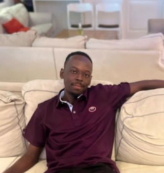

Home
About Me
My name is Nana Kwesi Gyeni. I am twenty years of age and a student in WDD231 Web Frontend Development I. I am from Ghana and currently living in Liverpool, England.
I am a member of the Presbyterian Church and the Church of Jesus Christ. My hobbies include playing basketball, coaching my church youth football team, playing video games, reading novels, and watching anime. I occasionally enjoy visiting resorts, hotels and restaurants to enjoy food of different variety.
I also enjoy participating in charitable events and spreading the gospel of Jesus Christ. I want to build modern, responsive websites using HTML, CSS, and JavaScript with a strong foundation in design and accessibility. My biggest aim is to start a Software and Tech Company under a corporation or group of my own.
Student Photo
Web Development Certificate Courses
Total Credits: 0